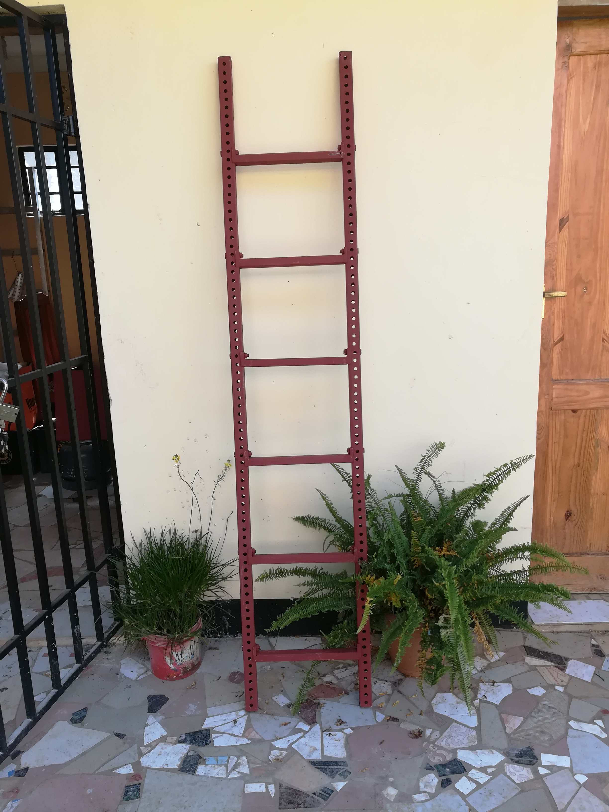

ladders revision 5538
^ Projects infobox ^^
| image | Ladder.scad.png |
| designer | [[user:tim|Timothy Schmidt]] |
| date | 2021 |
| vitamins | |
| materials | |
| transformations | |
| lifecycles | |
| parts | [[bolts|Bolts]], [[end_caps|End caps]], [[frames|Frames]], [[nuts|Nuts]] |
| tools | [[wrenches|Wrenches]] |
| techniques | [[tri_joints|Tri joints]] |
| git | |
| stl | |
Challenges
Some spaces are inaccessible without aid.
Approaches
Fixed ladder

